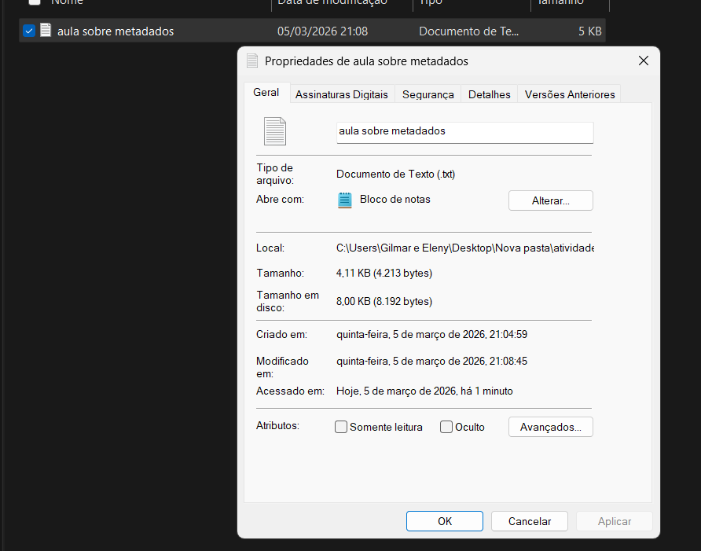

Metadados sao dados que descrevem outros dados. Em um arquivo, eles ajudam a identificar informacoes importantes como nome, tipo, tamanho, data de criacao, data de modificacao e autor.
No Windows, voce pode ver essas informacoes clicando com o botao direito no arquivo e escolhendo Propriedades. Essa janela permite consultar detalhes tecnicos e, em alguns tipos de arquivo, editar campos como titulo, autor e comentarios.
Conhecer a janela Propriedades facilita a organizacao de arquivos, a busca por documentos e o controle de versoes no dia a dia.

A extensão é o final do nome do arquivo, normalmente após um ponto. Exemplos comuns: .docx, .xlsx, .pdf, .jpg e .mp4.
Ela indica para o sistema qual programa podee abrir aquele conteúdo. Um arquivo com extensão errada pode não abrir corretamente, mesmo que tenha sido salvo com informações válidas.
Para evitar erros, é importante mantér as extensões visíveis no explorador de arquivos e ter cuidado ao renomear arquivos, sem remover ou alterar a parte final por engano.